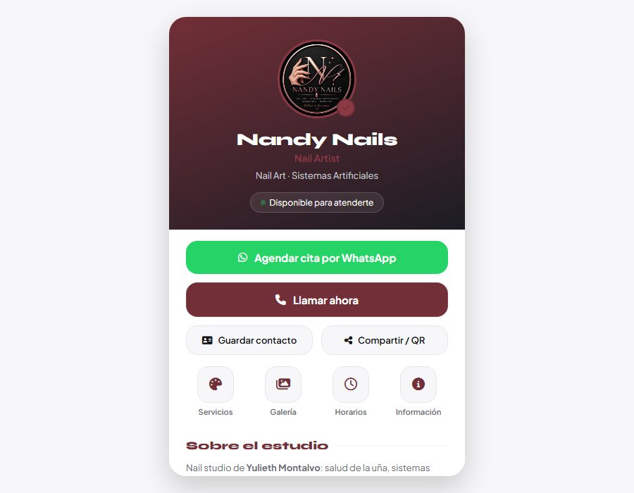

Nandy Nails — Uñas y manicure
Belleza · Uñas y manicure · Tarjeta digital
4 servicios con precio publicado
Galería en carrusel deslizable
Cita por WhatsApp con mensaje escrito
Instalable como app en el celular
Antes: el estudio atendía por WhatsApp y por llamada al +57 301 162 3221, y no tenía un enlace propio donde una clienta nueva pudiera ver servicios, precios, diseños y horarios antes de escribir.
Después: la tarjeta reúne los 4 servicios con su precio, la galería de diseños, los horarios, el correo y el teléfono, y deja la cita a un toque con el mensaje ya escrito en el chat.
Ver proyecto en vivo